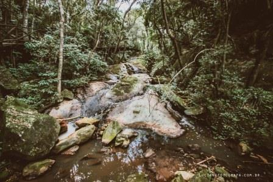

Recanto da Cascata
{kind=link}
Cercado pela Mata Atlântica e localizado bem próximo ao centro de São Roque, o Recanto da Cascata é um recinto criado para receber os principais eventos da cidade de São Roque. Sua beleza exuberante é constituída por uma cascata formada pelas águas do Ribeirão Carambeí, por trilhas em meio à mata e jardins de flores naturais. O Recanto da Cascata foi criado inicialmente com o intuito de receber a Expo Floral, evento que substituiu a famosa Festa do Vinho, mas que tinha além dos vinhos, as flores e a gastronomia a base de alcachofras também como personagens principais da festa.
A Expo Floral passou a chamar-se Expo São Roque e é sem dúvida um dos principais eventos da cidade de São Roque e que o Recanto da Cascata abriga. Vinhos, comidas típicas, músicas, danças e a famosa Pisa da Uva fazem deste evento, um dos principais motivos para turistas visitarem São Roque. Com o passar dos anos, o Recanto da Cascata passou a receber outros grandes eventos da cidade de São Roque. Exposição de Orquídeas, Encontros de Carros Antigos, Encontros de Motos, Festa das Nações, entre outros eventos, fazem parte do calendário anual do local. Durante todo o ano o Recanto da Cascata permanece aberto à visitação, porém não é permitido banhar-se na cascata. Mesmo assim vale a visita.